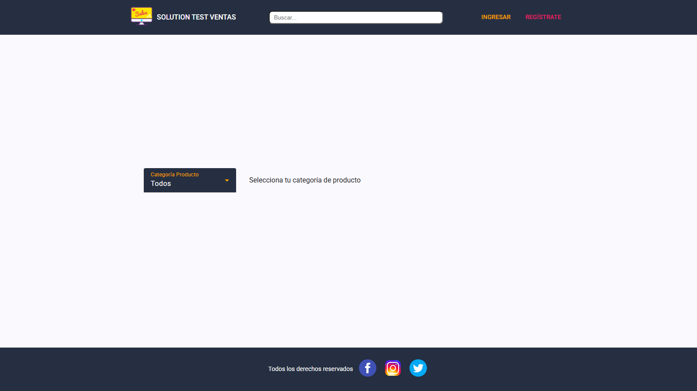
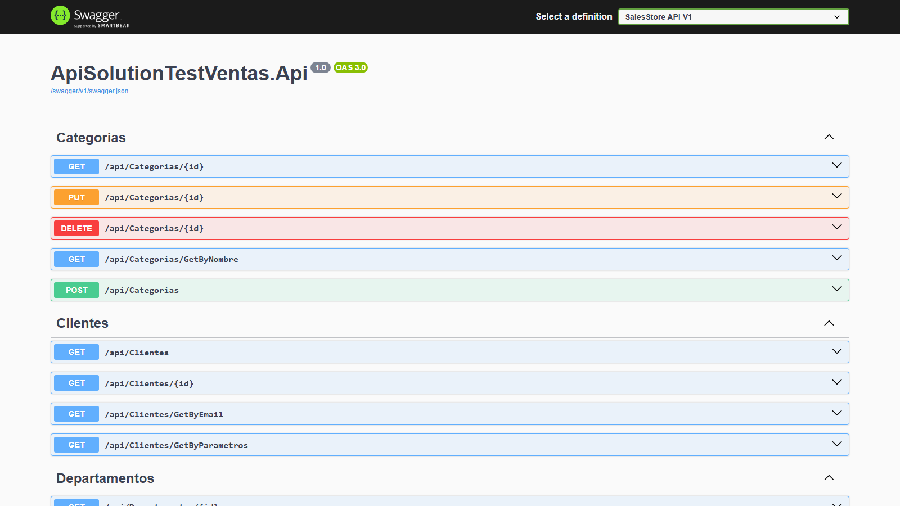
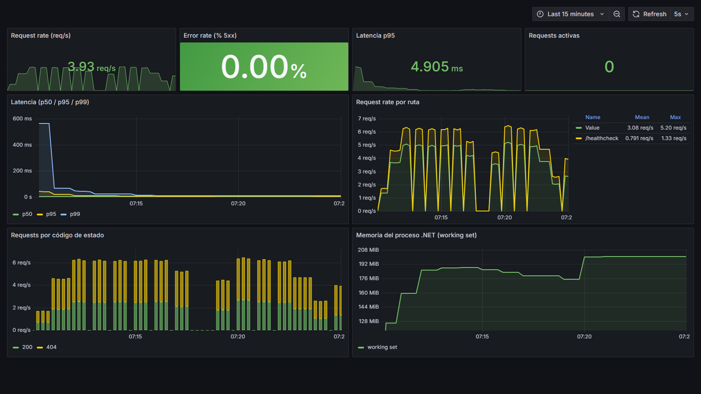
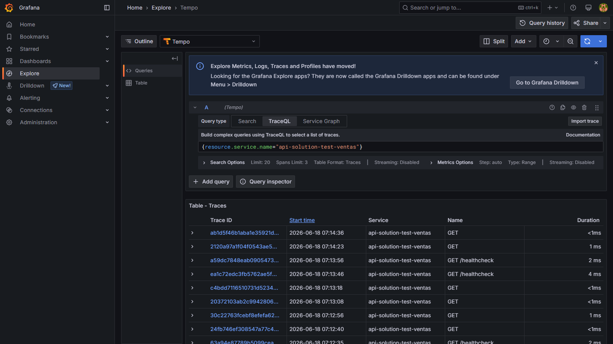
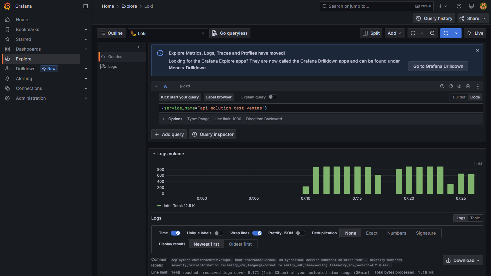
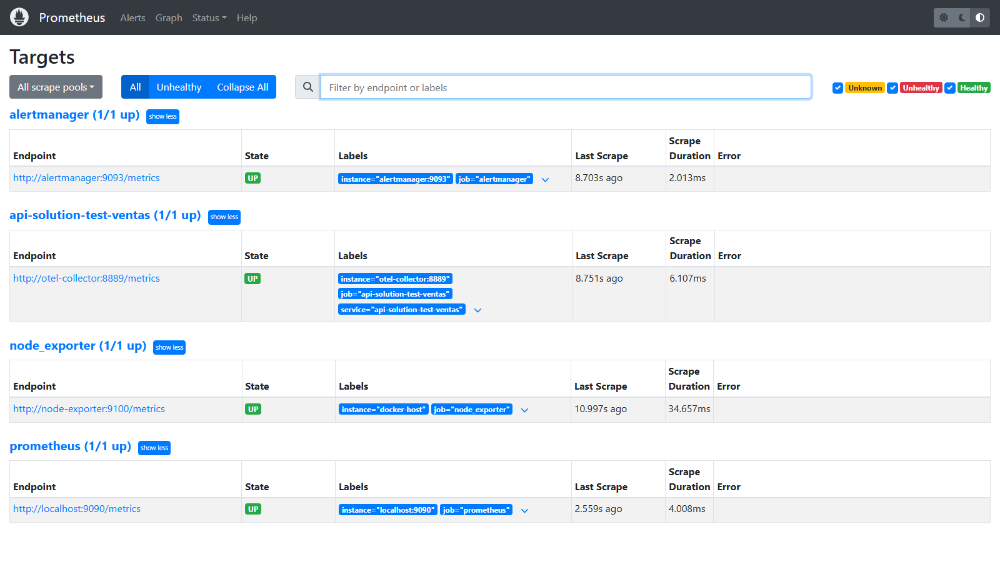
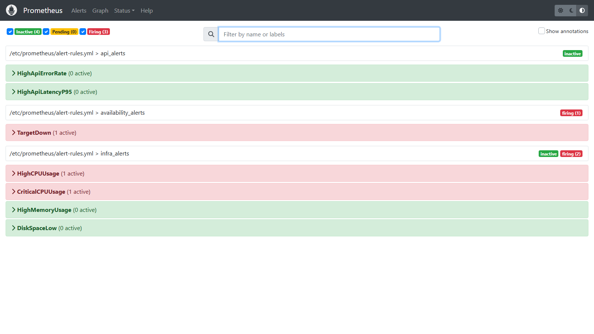
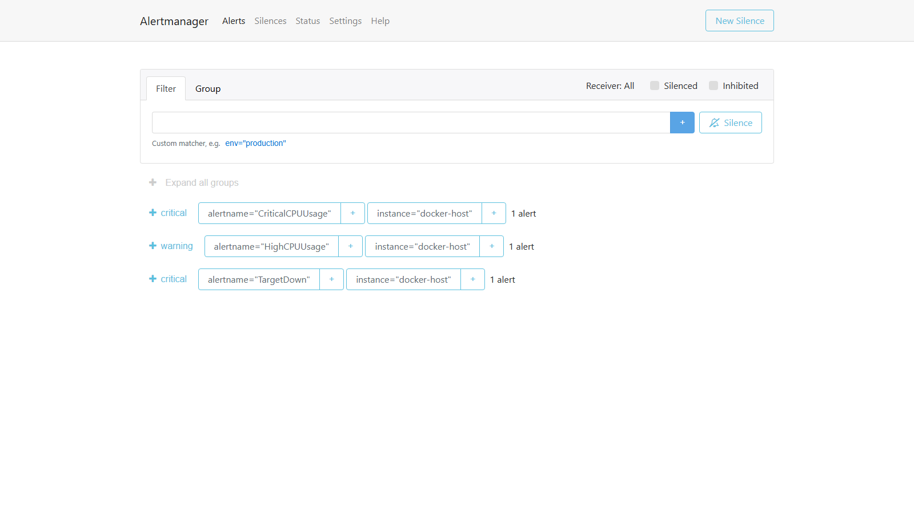

El proyecto es un monorepo bajo proyecto integrador/ con cuatro repositorios:
| Componente | Stack | Despliegue destino |
|---|---|---|
Backend (api-backend-solution-test-ventas) | ASP.NET Core .NET 10 (C#), EF Core → Azure SQL, JWT, Serilog | Azure AKS (Kubernetes) |
Frontend (online-store-frontend) | Angular 20 servido con nginx | AWS (S3 + CloudFront) |
Infra backend (iac-terraform-backend-test-ventas) | Terraform (azurerm) | Azure (dev/qa/prd) |
Infra frontend (online-store-infra) | Terraform (AWS) | AWS (staging/qa/production) |
El flujo completo de la aplicación y la telemetría queda así:
| Pieza | Imagen | Rol |
|---|---|---|
| OpenTelemetry Collector | otel/opentelemetry-collector-contrib:0.127.0 | Recibe OTLP y reparte a los 3 backends |
| Prometheus | prom/prometheus:v2.55.1 | Métricas + evaluación de reglas |
| Tempo | grafana/tempo:2.10.7 | Almacén de trazas |
| Loki | grafana/loki:3.4.2 | Almacén de logs |
| Grafana | grafana/grafana:11.6.15 | Visualización y correlación |
| AlertManager | prom/alertmanager:v0.27.0 | Enrutado/agrupado/silenciado de alertas |
| Node Exporter | prom/node-exporter:v1.7.0 | Métricas de host (CPU/RAM/disco) |
| SQL Server (local) | mcr.microsoft.com/mssql/server:2022-latest | BD local para desarrollo |
Se eligió OpenTelemetry como estándar de instrumentación y un OTel Collector como hub central. Ventaja clave: el código de la app no depende del backend de telemetría; solo exporta OTLP. Cambiar de destino (local hoy, Azure mañana) es solo cambiar a dónde apunta el Collector.
| Pilar | Cómo se genera | Dónde se ve |
|---|---|---|
| Métricas | Instrumentación ASP.NET Core + HttpClient + Runtime .NET (RED: tasa, errores, latencia) | Prometheus → dashboard RED en Grafana |
| Trazas | ASP.NET Core + HttpClient + EF Core (request → controller → SQL) | Tempo (Explore en Grafana) |
| Logs | Serilog con sink OTLP (incluye trace_id para correlación) | Loki (Explore en Grafana) |
Reglas en Prometheus, evaluadas y enviadas a AlertManager:
HighApiErrorRate (5xx > 5%), HighApiLatencyP95 (p95 > 1s).HighCPUUsage (>80%), CriticalCPUUsage (>95%), HighMemoryUsage (>85%), DiskSpaceLow (<15%).TargetDown (up == 0).AlertManager enruta por severidad (critical / warning) y aplica inhibición (una crítica silencia su warning equivalente). El ciclo de vida es Inactive → Pending → Firing → Resolved.
Se añadieron los paquetes OTel al ApiSolutionTestVentas.Api.csproj y se creó Observability/ObservabilityExtensions.cs que registra métricas y trazas. En Program.cs se llama a builder.AddObservability() y se añade un sink OTLP a Serilog para los logs.
// ObservabilityExtensions.cs (resumen)
builder.Services.AddOpenTelemetry()
.ConfigureResource(r => r.AddService("api-solution-test-ventas"))
.WithMetrics(m => m.AddAspNetCoreInstrumentation().AddHttpClientInstrumentation()
.AddRuntimeInstrumentation().AddOtlpExporter())
.WithTracing(t => t.AddAspNetCoreInstrumentation().AddHttpClientInstrumentation()
.AddEntityFrameworkCoreInstrumentation().AddOtlpExporter());En observability/docker-compose.yml: Collector, Prometheus, Tempo, Loki, Grafana (datasources y dashboard RED provisionados como código), más Node Exporter y AlertManager. El Collector (otel-collector-config.yaml) recibe OTLP y exporta a los tres backends.
Se unió el frontend a la red Docker compartida observability y se configuró BACKEND_URL=http://api_sales:80 (nombre de servicio + puerto interno 80, no 8080). nginx hace proxy_pass de /api/ al backend.
Como el firewall de Azure SQL bloquea la IP local, se añadió un overlay docker-compose.localdb.yml con SQL Server local; las migraciones crean el esquema y los seeders lo pueblan al arrancar el API.
Se añadieron AlertManager + Node Exporter + reglas (alert-rules.yml) y se conectó Prometheus a AlertManager. Se demostró el ciclo de una alerta hasta Firing y su llegada a AlertManager.
Capturas reales del entorno funcionando (generadas automáticamente con un navegador headless sobre las UIs locales).

http://localhost.
http://localhost:8080/swagger.

api-solution-test-ventas en Tempo (Explore de Grafana).
trace_id.


http_server_request_duration_seconds_count{service_name="api-solution-test-ventas"} presente en Prometheus.api-solution-test-ventas consultable en Tempo.{service_name="api-solution-test-ventas"} en Loki.GET /api/... desde nginx llega al backend (respuesta real, no 502).Firing y fue recibida por AlertManager (ruta critical).# 1) Stack de observabilidad
cd ~/sttv/observability && docker compose up -d
# 2) Backend + SQL Server local + observabilidad
cd ~/sttv && docker compose \
-f docker-compose.yaml \
-f docker-compose.observability.yml \
-f docker-compose.localdb.yml up -d
# 3) Frontend
cd ~/fe && docker compose up -d| UI | URL | Credenciales |
|---|---|---|
| Aplicación (frontend) | http://localhost | — |
| API (Swagger) | http://localhost:8080/swagger | — |
| Grafana | http://localhost:3000 | admin / admin |
| Prometheus | http://localhost:9090 | — |
| AlertManager | http://localhost:9093 | — |
Cada componente va a una nube distinta. Lo siguiente está basado en los pipelines de CI/CD y la IaC reales (verificado contra los archivos).
b497fd69-…). Regiones: dev/qa en westus3, PRD en centralus.acrsalesstoredmcshared (desplegar primero environments/shared).kubectl apply del k8s/deployment.yml (2 réplicas + Service LoadBalancer:8080). Promoción por ramas develop→qa→main con aprobaciones.AZURE_CREDENTIALS, connection strings, JWT), backend remoto de tfstate (hoy comentado), y terraform.tfvars reales.492094933097, región us-east-1, autenticación OIDC federado (sin llaves estáticas).online-store-infra) provisiona S3 privado + CloudFront (OAC) + SSM param + CloudWatch. GitHub Actions hace build → s3 sync → cloudfront invalidation. production requiere aprobación./online-store/{env}/backend-url).El backend ya emite OTLP; falta la plataforma. Dos opciones:
monitor_metrics{} en el AKS. Menos mantenimiento.En ambos casos hay que añadir a k8s/deployment.yml las variables OTEL_EXPORTER_OTLP_ENDPOINT, OTEL_SERVICE_NAME y desplegar un OTel Collector en el clúster (namespace observability).
Acciones_CI_CD.txt (clientSecret del Service Principal, contraseña SQL, account keys de Storage) → rotar todo y mover a GitHub Secrets + Azure Key Vault.AllowAnyOrigin(), conviene acotarlo).k8s/deployment.yml: ASPNETCORE_ENVIRONMENT hardcodeado a Development y sin readinessProbe/livenessProbe ni HPA.